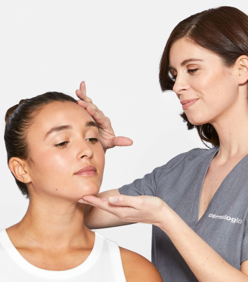
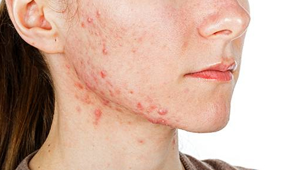
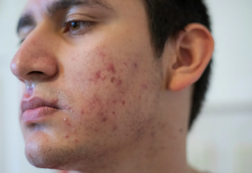
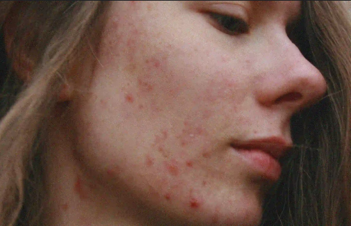
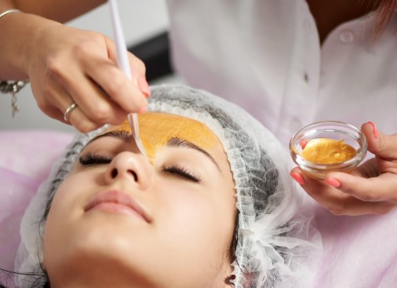
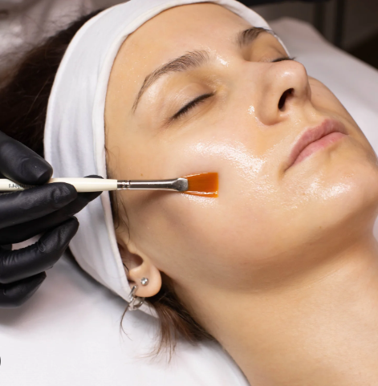
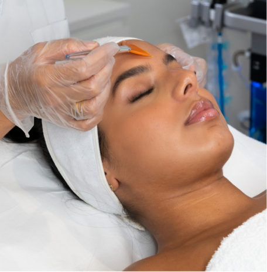
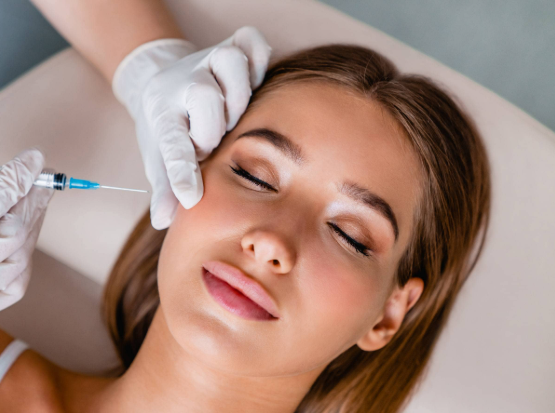
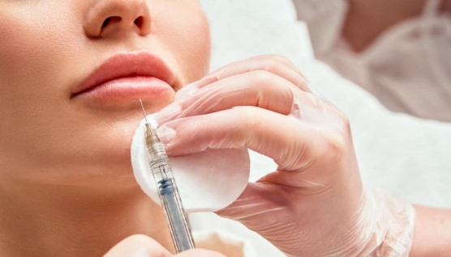
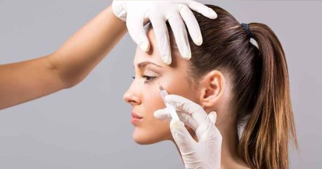

Nos Services
Diagnostic de la peau



Le diagnostic de la peau est une étape fondamentale en dermatologie. Il consiste à analyser en profondeur l'état de la peau grâce à des outils spécialisés et à l'expertise du dermatologue. Cette évaluation permet d'identifier les affections cutanées (acné, eczéma, psoriasis, infections, allergies, taches, vieillissement prématuré…) et de déterminer le traitement le plus adapté. Un bon diagnostic prend en compte l'historique médical, les habitudes de vie, ainsi que les caractéristiques propres à chaque patient (type de peau, sensibilité, exposition au soleil). C'est une étape essentielle pour prévenir, traiter efficacement et assurer une peau saine et équilibrée.
تشخيص الجلد هو خطوة أساسية في طب الأمراض الجلدية. يهدف إلى تحليل حالة الجلد بشكل معمّق باستعمال أدوات متخصّصة وخبرة طبيب الجلد. يساعد هذا التقييم على تحديد الأمراض الجلدية مثل حبّ الشباب، الإكزيما، الصدفية، الالتهابات، الحساسية، البقع والتقدّم المبكر في العمر، ثم اختيار العلاج الأنسب. يأخذ التشخيص بعين الاعتبار التاريخ الطبي للمريض، ونمط حياته، وخصائص بشرته (نوع البشرة، حساسيتها، ومدى تعرضها للشمس). يُعد التشخيص الدقيق أساسياً للوقاية والعلاج وضمان بشرة صحية ومتوازنة.
Traitement de l'acné



Le traitement de l'acné vise à réduire les boutons, points noirs, inflammations et cicatrices laissées par cette affection fréquente. Selon la gravité, il peut inclure des crèmes ou gels topiques, des médicaments oraux (antibiotiques, rétinoïdes), des soins dermatologiques tels que le peeling ou la lumière LED, et des conseils d'hygiène de vie adaptés. L'objectif est non seulement d'améliorer l'apparence de la peau, mais aussi de prévenir les cicatrices permanentes et de renforcer la confiance en soi du patient.
علاج حبّ الشباب يهدف إلى التخفيف من البثور، الرؤوس السوداء، الالتهابات والندوب التي يخلّفها هذا المرض الشائع. يعتمد العلاج على شدّة الحالة، وقد يشمل كريمات أو جلّات موضعية، أدوية عبر الفم (مثل المضادات الحيوية أو الريتينويدات)، أو جلسات علاجية عند طبيب الجلد كالتقشير أو العلاج بالضوء. الهدف من العلاج هو تحسين مظهر البشرة، منع تكوّن ندوب دائمة، وتعزيز ثقة المريض بنفسه.
Peeling chimique



Le peeling chimique est une technique dermatologique esthétique qui consiste à appliquer une solution chimique contrôlée sur la peau afin de provoquer une exfoliation et stimuler le renouvellement cellulaire. Il permet de corriger diverses imperfections : taches pigmentaires, cicatrices d'acné, rides fines, pores dilatés et teint terne. Adapté à chaque type de peau et réalisé sous supervision médicale, le peeling redonne éclat, douceur et uniformité au visage, avec une peau visiblement plus jeune et revitalisée.
التقشير الكيميائي هو إجراء تجميلي جلدي يقوم على وضع محلول كيميائي مدروس على البشرة لإحداث تقشير وتحفيز تجديد الخلايا. يساعد هذا العلاج على تصحيح عيوب متعددة مثل التصبغات، ندوب حبّ الشباب، التجاعيد الدقيقة، المسام الواسعة وشحوب الوجه. يتم اختيار نوع التقشير حسب طبيعة البشرة وتحت إشراف الطبيب المختص. يمنح هذا العلاج إشراقة وحيوية للبشرة، ويجعلها أكثر نعومة وتجانساً وشباباً.
Laser dermatologique


Le laser dermatologique est une technologie médicale avancée utilisée pour traiter un large éventail de problèmes cutanés. Grâce à la précision du faisceau lumineux, il agit de manière ciblée sur les taches brunes, cicatrices, rides, varicosités, angiomes ou poils indésirables. Chaque type de laser est adapté à une indication spécifique, ce qui permet d'obtenir des résultats efficaces et sécurisés. Ce traitement offre un rajeunissement cutané non invasif, améliore la texture de la peau et redonne confiance aux patients.
الليزر الجلدي هو تقنية طبية متطوّرة تُستعمل لعلاج مجموعة واسعة من مشاكل البشرة. بفضل دقة شعاع الضوء، يعمل بشكل موجّه على البقع الداكنة، الندوب، التجاعيد، الشعيرات الدموية الظاهرة، الأورام الوعائية أو الشعر غير المرغوب فيه. يتم اختيار نوع الليزر حسب الحالة للحصول على نتائج فعّالة وآمنة. هذا العلاج يوفّر تجديداً للبشرة دون جراحة، يحسّن ملمس الجلد ويعيد الثقة للمريض.
Chirurgie des grains de beauté


La chirurgie des grains de beauté consiste à retirer un nævus (grain de beauté) jugé inesthétique ou suspect d'un point de vue médical. L'intervention est réalisée sous anesthésie locale, de manière rapide et indolore. Après l'excision, le grain de beauté peut être analysé en laboratoire pour détecter toute anomalie éventuelle (prévention du mélanome). Ce geste simple allie sécurité médicale et souci esthétique, offrant au patient tranquillité et confort.
جراحة إزالة الشامات (الوحَمات) تهدف إلى استئصال الشامة التي قد تكون غير مرغوبة جمالياً أو يُشكّ في طبيعتها من الناحية الطبية. تُجرى العملية تحت تخدير موضعي بطريقة سريعة وغير مؤلمة. بعد الإزالة، يمكن تحليل الشامة في المختبر للكشف عن أي تغيّرات غير طبيعية (للوقاية من سرطان الجلد). هذا الإجراء يجمع بين الأمان الطبي والجانب الجمالي، مما يمنح المريض راحة واطمئناناً.
Traitement des verrues


Le traitement des verrues repose sur différentes techniques médicales, selon leur localisation, leur nombre et leur résistance. Les méthodes les plus courantes incluent la cryothérapie (azote liquide), l'électrocoagulation, le laser ou l'application de produits kératolytiques. Ces interventions visent à détruire la verrue, limiter la récidive et améliorer le confort du patient. Un suivi dermatologique est important pour éviter la propagation et choisir le traitement le plus adapté.
علاج الثآليل يعتمد على عدّة تقنيات طبية وفقاً لمكانها، عددها ومقاومتها. من أكثر الطرق استعمالاً: التجميد بالنيتروجين السائل (الكرايوثيرابي)، الكيّ الكهربائي، الليزر أو وضع مواد مذيبة للجلد المتصلب. الهدف من العلاج هو إزالة الثآليل، منع عودتها وتحسين راحة المريض. يُعتبر المتابعة مع طبيب الجلدية مهمة لتفادي انتشارها واختيار أنسب وسيلة علاجية.
Consultation des enfants
La consultation dermatologique pédiatrique concerne les affections cutanées propres aux nourrissons, enfants et adolescents. Elle prend en charge des pathologies fréquentes comme l'eczéma, les allergies, les infections cutanées, les taches de naissance, l'acné juvénile ou les maladies génétiques de la peau. Le dermatologue adapte ses explications et ses traitements à l'âge de l'enfant et rassure les parents, offrant ainsi un accompagnement spécialisé et bienveillant.
الاستشارة الجلدية للأطفال تهتم بالأمراض الجلدية الخاصة بالرضّع، الأطفال والمراهقين. وتشمل متابعة حالات شائعة مثل الإكزيما، الحساسية، الالتهابات الجلدية، الوحمات، حبّ الشباب عند المراهقين أو الأمراض الوراثية الجلدية. يقوم طبيب الجلدية بتكييف العلاج وشرحه بما يتناسب مع عمر الطفل ويطمئن الأهل، مما يوفّر رعاية متخصّصة ولطيفة.
Injections esthétiques



Les injections esthétiques (toxine botulique et acide hyaluronique) sont des techniques non chirurgicales visant à rajeunir et embellir le visage. Le Botox agit sur les muscles responsables des rides d'expression, tandis que l'acide hyaluronique redonne du volume et hydrate la peau en profondeur. Ces traitements offrent un résultat naturel, rapide et réversible, permettant de lisser les rides, harmoniser les traits et restaurer l'éclat du visage sans intervention lourde.
الحقن التجميلية (البوتوكس وحمض الهيالورونيك) هي تقنيات غير جراحية تهدف إلى تجديد شباب الوجه وتحسين مظهره. يعمل البوتوكس على إرخاء العضلات المسؤولة عن التجاعيد التعبيرية، بينما يعيد حمض الهيالورونيك امتلاء البشرة ويرطّبها بعمق. تمنح هذه العلاجات نتيجة طبيعية وسريعة ويمكن تعديلها، حيث تساعد على تنعيم التجاعيد، تحسين تناسق الملامح واسترجاع إشراقة الوجه دون تدخل جراحي.